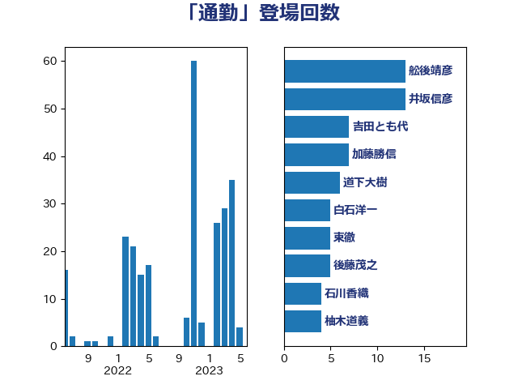

単語「通勤」

| 舩後靖彦 | れいわ新選組 | 13 回 |
| 井坂信彦 | 立憲民主党 | 13 回 |
| 吉田とも代 | 日本維新の会 | 7 回 |
| 加藤勝信 | 自由民主党 | 7 回 |
| 道下大樹 | 立憲民主党 | 6 回 |
| 白石洋一 | 立憲民主党 | 5 回 |
| 東徹 | 日本維新の会 | 5 回 |
| 後藤茂之 | 自由民主党 | 5 回 |
| 石川香織 | 立憲民主党 | 4 回 |
| 柚木道義 | 立憲民主党 | 4 回 |
| 古川禎久 | 自由民主党 | 4 回 |
| 鈴木俊一 | 自由民主党 | 3 回 |
| 熊谷裕人 | 立憲民主党 | 3 回 |
| 森山浩行 | 立憲民主党 | 3 回 |
| 梅村聡 | 日本維新の会 | 3 回 |
| 早稲田ゆき | 立憲民主党 | 3 回 |
| 斉藤鉄夫 | 公明党 | 3 回 |
| 島村大 | 自由民主党 | 3 回 |
| 高橋千鶴子 | 日本共産党 | 2 回 |
| 鈴木敦 | 国民民主党 | 2 回 |
| 金子恭之 | 自由民主党 | 2 回 |
| 野間健 | 立憲民主党 | 2 回 |
| 野田聖子 | 自由民主党 | 2 回 |
| 赤羽一嘉 | 公明党 | 2 回 |
| 穂坂泰 | 自由民主党 | 2 回 |
| 牧原秀樹 | 自由民主党 | 2 回 |
| 清水貴之 | 日本維新の会 | 2 回 |
| 永岡桂子 | 自由民主党 | 2 回 |
| 本田顕子 | 自由民主党 | 2 回 |
| 本村伸子 | 日本共産党 | 2 回 |
| 末次精一 | 立憲民主党 | 2 回 |
| 川合孝典 | 国民民主党 | 2 回 |
| 天畠大輔 | れいわ新選組 | 2 回 |
| 塩川鉄也 | 日本共産党 | 2 回 |
| 古賀之士 | 立憲民主党 | 2 回 |
| 前川清成 | 日本維新の会 | 2 回 |
| 中川康洋 | 公明党 | 2 回 |
| 上田英俊 | 自由民主党 | 2 回 |
| 上田清司 | 国民民主党 | 2 回 |
| 高見康裕 | 自由民主党 | 1 回 |
| 高橋光男 | 公明党 | 1 回 |
| 長坂康正 | 自由民主党 | 1 回 |
| 鈴木英敬 | 自由民主党 | 1 回 |
| 野田佳彦 | 立憲民主党 | 1 回 |
| 遠藤良太 | 日本維新の会 | 1 回 |
| 逢沢一郎 | 自由民主党 | 1 回 |
| 足立敏之 | 自由民主党 | 1 回 |
| 谷公一 | 自由民主党 | 1 回 |
| 西田昭二 | 自由民主党 | 1 回 |
| 葉梨康弘 | 自由民主党 | 1 回 |
| 菊田真紀子 | 立憲民主党 | 1 回 |
| 若宮健嗣 | 自由民主党 | 1 回 |
| 舞立昇治 | 自由民主党 | 1 回 |
| 自見はなこ | 自由民主党 | 1 回 |
| 篠原豪 | 立憲民主党 | 1 回 |
| 笠浩史 | 無所属 | 1 回 |
| 窪田哲也 | 公明党 | 1 回 |
| 石川大我 | 立憲民主党 | 1 回 |
| 石原正敬 | 自由民主党 | 1 回 |
| 矢倉克夫 | 公明党 | 1 回 |
| 田村智子 | 日本共産党 | 1 回 |
| 田村まみ | 国民民主党 | 1 回 |
| 田中健 | 国民民主党 | 1 回 |
| 湯原俊二 | 立憲民主党 | 1 回 |
| 浜口誠 | 国民民主党 | 1 回 |
| 河野太郎 | 自由民主党 | 1 回 |
| 櫻田義孝 | 自由民主党 | 1 回 |
| 林芳正 | 自由民主党 | 1 回 |
| 松野明美 | 日本維新の会 | 1 回 |
| 日下正喜 | 公明党 | 1 回 |
| 平林晃 | 公明党 | 1 回 |
| 平木大作 | 公明党 | 1 回 |
| 川田龍平 | 立憲民主党 | 1 回 |
| 岡田直樹 | 自由民主党 | 1 回 |
| 山田美樹 | 自由民主党 | 1 回 |
| 小池晃 | 日本共産党 | 1 回 |
| 宮崎雅夫 | 自由民主党 | 1 回 |
| 大西健介 | 立憲民主党 | 1 回 |
| 大口善徳 | 公明党 | 1 回 |
| 国光あやの | 自由民主党 | 1 回 |
| 嘉田由紀子 | 無所属 | 1 回 |
| 北神圭朗 | 無所属 | 1 回 |
| 倉林明子 | 日本共産党 | 1 回 |
| 佐藤英道 | 公明党 | 1 回 |
| 伊藤孝恵 | 国民民主党 | 1 回 |
| 伊波洋一 | 無所属 | 1 回 |
| 伊佐進一 | 公明党 | 1 回 |
| 井出庸生 | 自由民主党 | 1 回 |
| 中野英幸 | 自由民主党 | 1 回 |
| 中条きよし | 日本維新の会 | 1 回 |
| 中島克仁 | 立憲民主党 | 1 回 |
| 中司宏 | 日本維新の会 | 1 回 |
| 上杉謙太郎 | 自由民主党 | 1 回 |
| 上月良祐 | 自由民主党 | 1 回 |
| 三反園訓 | 無所属 | 1 回 |
| 三上えり | 立憲民主党 | 1 回 |
| おおつき紅葉 | 立憲民主党 | 1 回 |